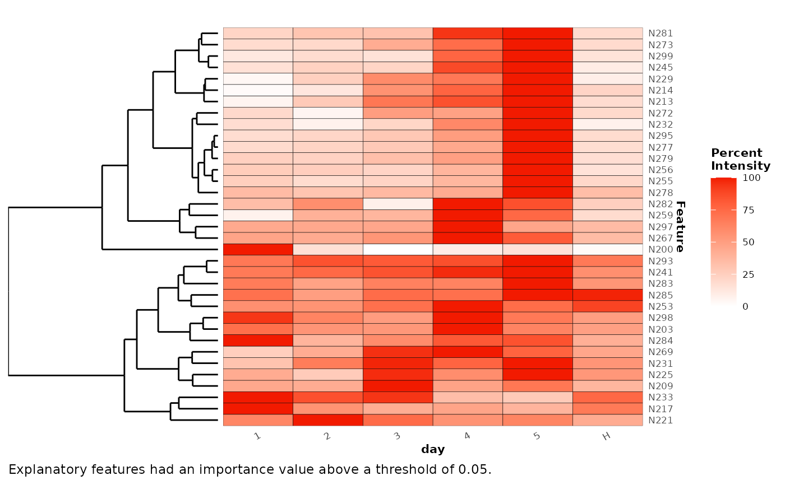
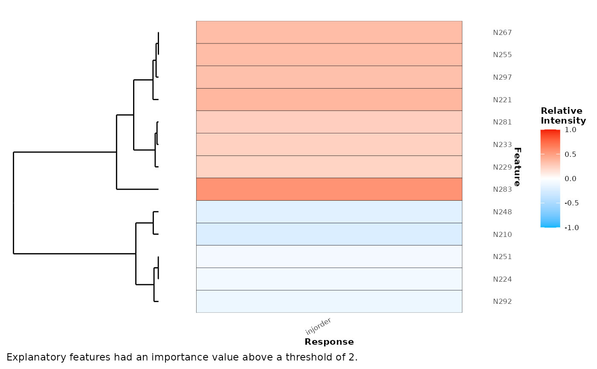

Plot a heatmap of explanatory features.
Usage
plotExplanatoryHeatmap(x, ...)
# S4 method for Univariate
plotExplanatoryHeatmap(
x,
threshold = 0.05,
title = "",
distanceMeasure = "euclidean",
clusterMethod = "ward.D2",
featureNames = TRUE,
dendrogram = TRUE,
featureLimit = Inf,
...
)
# S4 method for RandomForest
plotExplanatoryHeatmap(
x,
metric = "false_positive_rate",
threshold = 0.05,
title = "",
distanceMeasure = "euclidean",
clusterMethod = "ward.D2",
featureNames = TRUE,
dendrogram = TRUE,
featureLimit = Inf,
...
)
# S4 method for list
plotExplanatoryHeatmap(
x,
threshold = 0.05,
distanceMeasure = "euclidean",
clusterMethod = "ward.D2",
featureNames = TRUE,
featureLimit = Inf
)
# S4 method for Analysis
plotExplanatoryHeatmap(
x,
threshold = 0.05,
distanceMeasure = "euclidean",
clusterMethod = "ward.D2",
featureNames = TRUE,
featureLimit = Inf
)Arguments
- x
object of class
Univariate,RandomForestorAnalysis- ...
arguments to pass to method
explanatoryFeatures()- threshold
score threshold to use for specifying explanatory features
- title
plot title
- distanceMeasure
distance measure to use for clustering. See details.
- clusterMethod
clustering method to use. See details
- featureNames
should feature names be plotted?
- dendrogram
TRUE/FALSE. Should the dendrogram be plotted?
- featureLimit
The maximum number of features to plot
- metric
importance metric on which to retrieve explanatory features
Details
Distance measures can be one of any that can be used for the method argument of dist().
Cluster methods can be one of any that can be used for the method argument of hclust().
Examples
library(metaboData)
x <- analysisData(data = abr1$neg[,200:300],info = abr1$fact)
## random forest classification example
random_forest <- randomForest(x,cls = 'day')
plotExplanatoryHeatmap(random_forest)

## random forest regression example
random_forest <- randomForest(x,cls = 'injorder')
plotExplanatoryHeatmap(random_forest,metric = '%IncMSE',threshold = 2)
